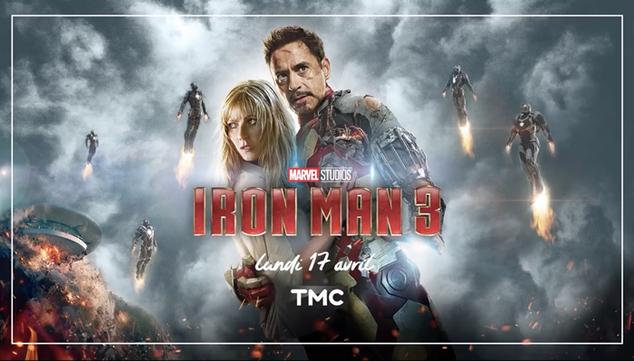

-

IRON MAN 1
Tony Stark, who has inherited the defense contractor Stark Industries from his late father Howard Stark, is in war-torn Afghanistan with his friend and military liaison, Lieutenant Colonel James Rhodes, to demonstrate the new "Jericho" missile. After the demonstration, his convoy is ambushed and Stark is critically wounded by a missile used by the attackers—one of his company's own. -

IRON MAN 2
In Russia, the media covers Tony Stark's disclosure of his identity as Iron Man. Ivan Vanko, whose father Anton Vanko—a former Stark Industries employee—has just died, seesthis and begins building a miniature arc reactor similar to Stark. Six months later,[b] Stark has become a media superstar and resists pressure to turn over his armored suits to the government. -

IRON MAN 3
At a New Year's Eve party in 1999, Tony Stark meets scientist Maya Hansen, the inventor of Extremis, an experimental regenerative treatment that allows recovery from crippling injuries. Disabled scientist Aldrich Killian offers them a place in his company Advanced Idea Mechanics, but Stark rejects him.